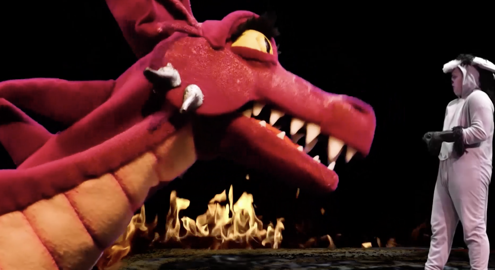

Yusuke Soi
Theater Productions
Shrek the musical @ Tri-school Productions
Role: Producer, Art director, Editor
During the pandemic, most of high school theater shows were forced to adapt to perform online or create filmed performances. Shrek the musical was a 2h show that we filmed student actors individually and separately in front of a green screen to follow CDC rules for social distancing.

×